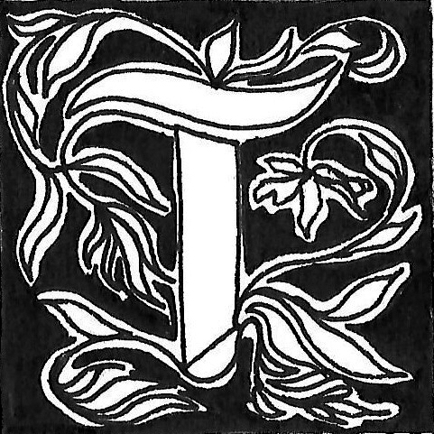

Tania Mouraud : prendre le temps de déchiffrer
Propos recueillis par Anaëlle Ducarouge, Carla Gallon et Audrey Rivollier
ania Mouraud est une artiste contemporaine qui crée ses œuvres à partir
de textes qu’elle s’efforce d’étirer,
déformer, transformer, recoller,
explorant ainsi les limites entre lisibilité et illisibilité. Le texte fait alors image en ce sens qu’il apparaît dans un premier temps comme une œuvre picturale, que l’on doit prendre
le temps d’observer pour percevoir le mot qui s’y cache.
De cette manière, l’image fait aussi texte pour celles et ceux qui prendront le temps de déchiffrer les lettres dissimulées.
Certaines de vos installations ou performances ont lieu,
non pas dans un musée, mais dans l’espace urbain, comme c’est le cas de vos City Performances dès les années 1970. Qu’est-ce qui oriente les choix de spatialisation de vos œuvres ? Pourquoi exposer vos Mots-Mêlés dans un musée, et vos City Performances dans l’espace urbain par exemple ?
J’appartiens à une génération où les jeunes filles étaient principalement élevées en vue de se marier. De mon côté, j’ai décidé de suivre une voie différente et de devenir artiste. À mon avis, exposer dans une galerie équivalait à occuper un espace public. Sortir de chez moi pour exposer dans une galerie revenait donc à devenir une artiste. Après un certain temps, je me suis sentie confinée dans cet environnement et j’ai ressenti le besoin de m’évader. J’avais déjà réalisé des œuvres postales et je voulais maintenant les amener dans la rue. Pour moi, il est devenu
très important d’intervenir dans la ville. Aujourd’hui encore,
les street artists ont beaucoup d’estime pour moi ; je représente un peu leur marraine, leur grand-mère. À Fluctuart, des jeunes artistes de street art m’ont présentée en disant qu’ils étaient
très honorés, que je les avais beaucoup influencés, et qu’ils avaient réalisé une œuvre en mon honneur. Vous ne trouverez pas beaucoup d’artistes de ce type dans une galerie. Je me considère un peu comme une saltimbanque, je me sens très à l’aise dans la rue. Cependant, je n’expose pas les mêmes œuvres en galerie. Par exemple, je ne vais pas installer un Mot-mêlé dans la rue, cela n’aurait aucun sens et ce n’est pas la même façon de procéder. Techniquement, c’est différent, c’est quelque chose que vous devez voir à l’intérieur.
Vous exposez donc certaines de vos œuvres dans l’espace urbain, déjà saturé de signes, d’informations, de publicités. À travers vos City Performances, vous présentez une image composée du mot « NI » en gros caractère, mais qui, lui, ne véhicule aucun sens particulier. Il semblerait dans ce projet que l’image ait plus de significations que le texte : ce qui compte, c’est la capacité à attirer l’attention avec une image, plutôt que le mot lui-même. Comment cela participe-t-il d’un travail de détournement du sens attendu, et perturbe les habitudes d’un public saisi dans son espace quotidien ?
Il faut d'abord remettre l’œuvre dans son contexte : en 1977,
si j’avais mis le « NI » dans une galerie ou dans un musée,
les gens l’auraient pris pour un tableau abstrait. Je ne suis pas d’accord avec vous pour dire que le « NI » n’a pas de sens. Le « NI » a en réalité une pluralité de sens : c’est le seul connecteur de logique mathématique qui est toujours facteur de vérité. Quand j’ai fait le « NI », c’était vraiment un cri dans la ville
pour dire que je n’étais d’accord avec rien de ce que la société
occidentale me proposait : c’est-à-dire ni l’argent, ni le pouvoir, ni la beauté, ni les produits, ni leurs idées, ni leur politique,
ni leur manière d’être.
J’aimerais revenir sur un autre terme que vous avez employé ; pour moi le public n’existe pas. Honnêtement, imaginez-vous mentalement ce que pourrait être le public : une espèce de truc informe, mais on ne sait jamais ce que c’est réellement.
Selon moi, ce qui existe c’est une personne, et ce que vous appelez « le public », moi je l’appelle plutôt « le regardeur »
ou « la regardeuse ». Cette personne, c’est un peu comme ma meilleure amie, celle à qui on dit tout ce qu’on a sur le cœur.
En tant qu’artiste, ma position c’est vraiment de partager avec vous tout ce que j’ai sur le cœur, non pas avec la parole, mais avec des formes.
En fait, vous considérez être plutôt dans une relation d’égalité, de partage, et non pas dans une relation hiérarchique dans laquelle l’artiste serait une entité idéalisée et porteuse de vérité.
Exactement. En tant que femme, je me tiens à l’écart des logiques de compétitivité et de virilité. Je suis dans la sororité
et le partage. Dans mon travail de vidéo par exemple, je n’ai jamais voulu travailler avec du matériel professionnel, parce que cela aurait instauré une barrière entre moi et les autres.
Une autre chose très importante dans ce que vous avez dit : effectivement dans mon travail avec l’écriture, je communique quelque chose, mais il faut prendre le temps de déchiffrer.
Dans la vie, on est tout le temps en train de courir, de penser
à appeler Untel, de regarder les réseaux sociaux toutes les cinq minutes. Si on ne prend pas le temps, on passe à côté de mon travail artistique. Mais cela m’est égal. Je l’ai fait, et si une
personne veut prendre le temps d’observer, alors on partage
la même chose. D’ailleurs, on parle des textes allongés, mais là où la lecture se complique encore plus, c’est lorsque je change de langue. Dans mon exposition à Fluctuart à Paris, il y a douze langues : il y en a onze pour « I have a Dream », et il y a les
écritures en yiddish. Le yiddish c’est une langue où il n’y a pas de mots pour la guerre, ou très peu. C’est une langue qui n’appartient à aucun pays. C’est une langue qui était la langue des « bonnes femmes », parce que les hommes, eux, apprenaient l’hébreu. C’était aussi la langue des voleurs. C’est ce qui m’a plu. Aujourd’hui, c’est une langue qui a presque été détruite, que quasiment plus personne n’emploie, bien que depuis peu
certaines personnes l’apprennent – il paraît qu’avec le covid,
300 000 personnes ont appris le yiddish sur Duolingo, et ça m’amuse beaucoup. En revanche, là où cela a vraiment pris
du sens, c’est lorsque mes écritures en yiddish ont été installées en Ukraine au moment de la guerre. Sur une grande toile qui faisait cinq mètres par trois, on pouvait lire « je ne suis pas
né pour me soumettre ». Vous n’imaginez pas tous les likes
et followers que j’ai eus sur Instagram à ce moment.
De manière générale dans la vie, on nous apprend à parler de choses qui ne nous intéressent pas, on nous apprend à nous conduire d’une certaine manière pour être bien en société,
mais cela ne correspond pas du tout à notre « moi » intérieur.
Et pour connaître ce qui nous correspond vraiment, il faut prendre le temps. Pour se confier à sa meilleure amie, il faut prendre le temps aussi.
Est-ce que selon vous il y aurait un•e spectateur•ice modèle ?
Non… Honnêtement je n’y pense pas, mon travail est un peu comme une bouteille à la mer. Je fais les choses, mais je ne cherche pas à plaire, je cherche juste à dire.
Je vais vous raconter une histoire. Quand j’étais jeune, je faisais des chambres de méditation. Il y en a une qui était au musée d’Art moderne de la Ville de Paris pendant environ quinze ans. Je suis allée rencontrer la directrice de Fluctuart pour parler
de l’exposition, et à un moment donné, lorsque je lui ai parlé
de mes chambres de méditation, elle m’a dit : « Est-ce que c’est vous qui avez fait la chambre de méditation du MAMVP ? »
Je lui ai donc répondu que oui, et d’un seul coup, son visage
a complètement changé. Et elle m’a raconté qu’à l’âge de quinze ans, et jusqu’à son bac, avec sa meilleure copine, elles allaient tous les matins dans la chambre de méditation pour se parler. Elles se racontaient des choses qu’on raconte à sa meilleure copine quand on a quinze ans donc ça durait des heures
évidemment. Pour elles, c’était une expérience incroyable.
Ce genre de réception, je trouve ça très beau.
Vous nous parlez justement d’un art de partage qui s’apparente à une relation amicale, ce qui montre que vous accordez une grande importance aux « regardeur•ses ». Toutefois, dans vos écritures présentes dans l’espace urbain, il semble y avoir une tension entre la visibilité du texte qui apparaît en gros caractères, et la déformation de celui-ci qui le rapproche de l’illisible. Comment négocier cette ambivalence entre lisibilité et illisibilité ?
Au début, lorsque j’ai commencé à travailler avec l’écriture
des lettres allongées, je travaillais avec des slogans de manifestation, parce que j’adorais manifester. C’est pour cela que j’ai commencé à travailler avec la phrase de Martin Luther King
« I have a Dream », ou avec d’autres telles que « Woman is beautiful ». Ensuite, j’ai beaucoup travaillé avec des textes d’opéra, ou de haïkus. Et puis, j’ai commencé à apprendre
le yiddish, ce qui a complètement changé l’aspect formel de mon travail parce que l’alphabet est différent. Les yiddishistes ne peuvent toutefois pas lire mes œuvres non plus, parce que les lettres qui sont normalement séparées, moi je les attache,
je les allonge, je les triture.
Lorsque je lis quelque chose qui me touche, j’ai immédiatement envie de faire une œuvre. À ce moment-là je commence à travailler sur Illustrator, je « tripatouille », jusqu’à ce que le résultat me plaise visuellement. Je suis quand même la première
regardeuse de mon travail, donc il doit avant tout me plaire
à moi. Au moment où je regarde mon travail je ne suis plus
l’artiste, je suis le « public ». Et c’est une des raisons pour laquelle ce n’est pas l’écriture qui devient une œuvre plastique, c’est le texte que j’ai choisi qui s’exprime d’une autre manière.
En 1966, vous disiez que votre peinture était « volontairement schématique afin d’échapper au pathos » car « les
sentiments humains sont dangereux ». Est-ce que cette idée est toujours présente dans vos œuvres plus récentes ?
Il nous semble qu’au contraire, certaines installations
ou performances cherchent justement à provoquer les
sentiments ; nous pensons notamment à la vidéo La Curée, à certaines installations comme We used to know qui atteignent directement les sens, ou à des performances musicales qui stimulent l’écoute et invitent à produire
des images mentales à partir de sensations.
Ce qui est important c’est de savoir qu’il y avait deux drames épouvantables au XXe siècle : la Shoah et la bombe atomique. J’ai vécu avec ça, mais personne n’en parlait. L’art minimal était donc une réaction à cette histoire épouvantable du XXe siècle. Cependant, à un certain moment, j’ai décidé que j’allais faire
ce que je souhaitais. En réalité, il y a eu une vraie rupture dans ma vie personnelle : un soir, j’ai découvert à la télé la musique klezmer par le clarinettiste David Krauker. C’était inouï comme musique. Par conséquent, je suis allée le lendemain m’acheter une clarinette – je ne savais pas que c’était aussi difficile –
et j’ai commencé à prendre des cours. À partir de là, il y a eu deux choses qui se sont produites : j’ai commencé la vidéo
et j’ai commencé les performances. À partir de cette rupture,
j’ai vraiment commencé à parler de mon ressenti personnel,
qui était justement lié à mon histoire familiale, et j’ai beaucoup travaillé en vidéo sur la destruction : destruction de la culture, destruction de la forêt, destruction du corps, etc. Et puis c’était aussi lié à des choses que je connaissais. Pour La Curée par exemple, j’étais déjà allée dans des chasses à courre quand j’étais jeune, et un jour on m’a demandé de faire une exposition à Bourges, où il y avait des chasses à courre. Par ailleurs,
mes œuvres sont aussi le reflet de la vie : elles montrent tout
ce qui peut se passer de triste ou de violent, certes, mais elles montrent aussi la paix parfois.
Nous nous sommes également intéressées à la dimension critique et polémique de vos œuvres. En tant qu’artiste « fille de héros », tel que vous vous qualifiez vous-même, nous aurions aimé savoir comment vous pensez votre engagement. Dans une période post-Seconde Guerre mondiale, certain•es théoricien•nes considèrent qu’il ne faut plus faire un art qui soit esthétique, et se tourner davantage vers un art engagé. Dans votre œuvre HCYS ? par exemple, vous semblez vous efforcer à réunir ces deux aspects : un texte dénonciateur, mais dans une forme esthétique. Comment négocier ce paradoxe entre dénonciation et esthétisation ?
Je n’aime pas du tout le mot « esthétisation », et encore moins le mot « esthétique ». En réalité, des évènements tels que l’atrocité des événements du 7 octobre, l’horreur des 30 000 morts dénombrés pour l’instant à Gaza, m’ont brisé le cœur. Et ce sentiment s’est exprimé par le travail sur un poème que je trouve terrible, et qui parle d’espoir dans un contexte de guerre tout-
à-fait atroce. Je suis une personne, je suis une citoyenne, donc je suis intéressée par ce qui se passe. J’ai du ressenti et j’ai envie de communiquer ce ressenti. Quand on est une maman, à part faire des gâteaux ou acheter des chaussures à ses enfants, on veut transmettre l’éthique, ou du moins, c’est ce que j’ai voulu faire. Vous savez, quand vous êtes fille d’un résistant, qui est mort dans la résistance, vous n’êtes pas comme les autres.
Mes parents, par leur conduite, n’avaient pas peur de la mort,
et se sont battus contre le mal, le mal incarné. Même si ma mère ne parlait jamais de tout ça, j’ai baigné là-dedans, et j’ai voulu le transmettre à mes enfants, à mes petits-enfants, mais pas avec des mots. Parce qu’en réalité, on transmet au-delà
des mots, on transmet par l’attitude. Ainsi, je n’estime pas que j’esthétise mes idées. Il s’avère que je suis de mon temps, mon esthétique correspond au XXe siècle, peut-être au XXIe siècle,
je ne sais pas.
Ce qui nous a amené à parler d’une forme « esthétique », c’est cette forme de droiture : il y a quelque chose de très propre dans vos écritures, de très millimétré, en noir et blanc. Pourtant, dans Mallarmé, vous reprenez la célèbre citation du poète : « un coup de dés jamais n’abolira
le hasard ». Est-ce que parfois vous laissez quand même
une part de hasard intervenir dans votre œuvre ?
En ce qui concerne le travail méticuleux de mes écritures,
je ne peux pas m’en empêcher, ça me rassure. Mais je crois beaucoup au hasard effectivement. Par exemple, ce qui m’intéresse, c’est mon travail en yiddish, parce que c’est de l’écriture, tout est nouveau et effectivement il y a des accidents. Et c’est formidable, parce que l’accident est le lieu où tout change.
Le hasard a aussi une grande part dans mes Mots-Mêlés.
En réalité, j’ai découvert le principe des mots mêlés lors d’un voyage en Inde, sur ma tablette. Ça faisait de belles barres de toutes les couleurs sur l’écran, et à un moment donné, je me suis dit que ce serait formidable si je pouvais faire ça en tant qu’artiste. Mon fils m’a créé un logiciel dans lequel je peux entrer les textes que j’aime, puis le logiciel génère des grilles
à partir de ces mots. C’est le logiciel qui fait la composition,
ce n’est pas moi.
Comme vous l’avez remarqué, nous avons souhaité orienter cet entretien sur les liens existants entre le texte et l’image. Toutefois, nous nous sommes rendues compte que vous vous tourniez de plus en plus vers un travail sonore, qui inclut parfois un dispositif vidéo, des lectures et des mots. Comment concevez-vous la place du texte et celle de l’image en lien avec cette production sonore ?
Concernant mon travail sonore, j’ai donc commencé avec
la clarinette. Puis, en tant qu’enseignante, j’ai créé un groupe,
avec quatre étudiants. Je voulais montrer comment les arts plastiques et la musique remettent en cause tous les -ismes
du passé. À partir de là, j’ai créé un groupe d’improvisation
qui s’appelait « Unité de production » avec lequel nous avons sorti des CD. Et un jour, alors que j’exposais à Brest, la directrice m’a demandé de faire une performance seule avec mon ordi-
nateur et ma clarinette, et cela s’est très bien passé. C’est ainsi que j’ai décidé de faire des performances seules. Au départ,
déjà avec mon groupe, ce qui m’intéressait c’était le hasard. Tout comme mon opinion avec les arts plastiques, je ne voulais pas que ce soit des musiciens extraordinaires qui montrent
à ce pauvre public à quel point ils sont extraordinaires et vont le transporter dans des lieux psychiques fabuleux. Je voulais qu’on soit, nous, les musiciens, aussi étonnés que les gens qui nous écoutaient. Nous étions au milieu du public, nous n’étions pas sur une estrade, et tout le monde pouvait venir derrière nous voir ce que nous faisions. Je me souviens de moments
formidables. Par exemple, il y avait un guitariste qui faisait exprès de casser ses cordes, une musicienne qui manipulait une boule de clous, au hasard, ce qui créait des sons. Personne ne savait ce que l’autre allait faire. Certains de nos concerts
en public pouvaient durer 5h30, et c’était formidable.
Je préfère travailler avec du son brut. Par exemple je ne vais
pas mettre d’écho au son d’une mobylette qui passe dans la rue seulement pour qu’il soit beau. Je ne touche pas trop à mes samples. Durant la performance, soit je les diffuse, soit ils se lancent de manière automatique, si bien que je ne m’ennuie
pas quand je fais une performance, pour moi c’est nouveau.
Par ailleurs, j’ai écrit deux recueils de poèmes : Flash et Carnet d’Atelier. On m’a demandé de faire des lectures mais cet exercice-là m’ennuie, donc j’ai enregistré des phrases issues de mes poèmes et je fais des performances qui les intègrent.
Vous utilisez parfois un dispositif vidéo lors de vos performances sonores. Comment est-ce que vous pensez le lien entre son et vidéo ?
Au départ, il y a souvent de la vidéo silencieuse qui se divise
en deux catégories : les vidéos d’installation qui sont en
couleur, et les vidéos de performance qui sont en noir et blanc. Je prends beaucoup de samples sur internet, de manifestations par exemple, de Martin Luther King, Mandela, de Hitler regardant la tour Eiffel, d’animaux maltraités, ou d’émigrés sur une embarcation qui coule. Ce sont des vidéos de choses d’aujourd’hui qui me touchent. Et là-dessus j’improvise. Mais il y a
aussi des vidéos que j’ai tournées moi-même. Je me souviens
par exemple du chantier du Centre Pompidou Metz avant
son ouverture dans lequel j’ai tourné une vidéo, parce que tout le monde avait des casques, et sans le contexte, on aurait cru que c’était des pompiers qui venaient pour sauver des gens.
En réalité, je pense que ce dispositif qui allie son et vidéo m’est venu de mon enfance. Quand j’étais toute petite, je devais avoir 4-5 ans, j’étais à la campagne, et notre cinéma c’était un drap blanc tendu dans une grange. J’ai vu Le dernier des mohicans [ndlr : réalisé en 1936 par George B. Seitz], qui était un film muet, mais avec nous il y avait un musicien, qui accompagnait les images du film au piano. Et je crois que mes histoires de vidéo et d’improvisation viennent de là [fig. 01 : HiaAtda, 2017, galerie Rabouan Moussion, Paris].